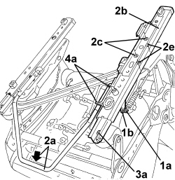
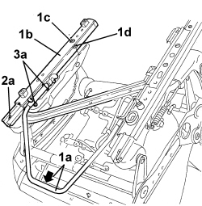
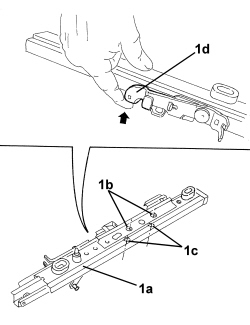
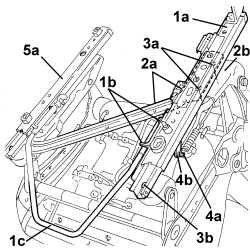
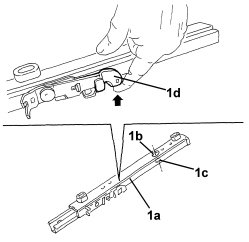
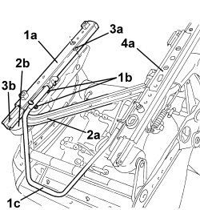
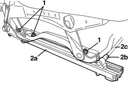

7045A67 SLIDING GUIDE (ONE), LEFT OR RIGHT FOR FRONT SEAT - R.R WITH SEAT REMOVED
- Path
- Procedures > 70 FITTINGS > 7045 FRONT SEATS > 7045A FRONT SEAT ASSEMBLY > 7045A67 SLIDING GUIDE (ONE), LEFT OR RIGHT FOR FRONT SEAT - R.R WITH SEAT REMOVED
- Kind
- repair procedure (removal / refitting; the operation number is the code)
- Applies to
- all engines; all production periods
- Interactive page
- https://sloeber94.github.io/elrnDB-aBrrSpdr/en/#/946004146
Applies to: all engines; all production periods
 Removing
Removing
 Refitting
RefittingFOR INNER GUIDE REMOVAL, PROCEED AS FOLLOWS
1. Disconnect end (1a) of memory control cable from lever (1b) for the guide.
2. Operate sliding lever (2a) and position guide (2b) with openings (2c) in line with bolts (2e) securing the actual guide.
3. Undo guide bolts (2e) and (3a).
4. Remove guide (2b) releasing retainers (4a) from sliding lever (2a).

Applies to: all engines; all production periods
FOR OUTER GUIDE REMOVAL, PROCEED AS FOLLOWS
1. Operate sliding lever (1a) and position guide (1b) with opening (1c) in line with bolt (1d) securing the actual guide.
2. Undo guide bolts (1d) and (2a).
3. Remove guide (1b) releasing retainers (3a) from sliding lever (1a).

Applies to: all engines; all production periods
Refitting
RemovingFOR INNER GUIDE REFITTING, PROCEED AS FOLLOWS
- Check that the guide is not damaged.
1. Position guide (1a) with openings (1b) in line with bolt housings (1c).

Applies to: all engines; all production periods
1. Place guide (1a) in position and attach retainers (1b) to sliding lever (1c).
2. Check that reinforcement crossmember (2a) is correctly positioned on seat structure (2b).
3. Fit guide bolts (3a) and (3b) and tighten them.
4. Connect end (4a) of the memory control cable to lever (4b) for the guide.
5. Align the two guides (1a) and (5a), proceeding as follows: lift up seat sliding control lever (1c) and keep it raised, then manually slide the two guides (1a) and (5a) until they are in the rear end of travel position to align them; lastly, release the sliding control lever and attach the retainers for the guides to the attachment teeth.

Applies to: all engines; all production periods
FOR OUTER GUIDE REFITTING, PROCEED AS FOLLOWS
- Check that the guide is not damaged.
1. Position guide (1a) with opening (1b) in line with bolt housing (1c).

Applies to: all engines; all production periods
1. Place guide (1a) in position and attach retainers (1b) to sliding lever (1c).
2. Check that reinforcement crossmember (2a) is correctly positioned on seat structure (2b).
3. Fit guide bolts (3a) and (3b) and tighten them.
4. Align the two guides (1a) and (4a), proceeding as follows: lift up seat sliding control lever (1c) and keep it raised, then manually slide the two guides (1a) and (4a) until they are in the rear end of travel position, in order to align them; lastly, release the sliding control lever and attach the retainers for the guides to the attachment teeth.

Applies to: all engines; all production periods; only with equipment: Electric seats
Removing
Refitting1. Undo the guide bolts.
2. Remove guide (2a) by releasing it from terminal (2b) of guide drive spindle.

Applies to: all engines; all production periods; only with equipment: Electric seats
Refitting
Removing- Check that the guide is not damaged.
- Check that the outer guide is aligned with the inner guide. If necessary, move both guides to the end of their travel (front or rear) to align.
- Attach the drive spindle terminal to the guide, then position the guide.
- Tighten the bolts.